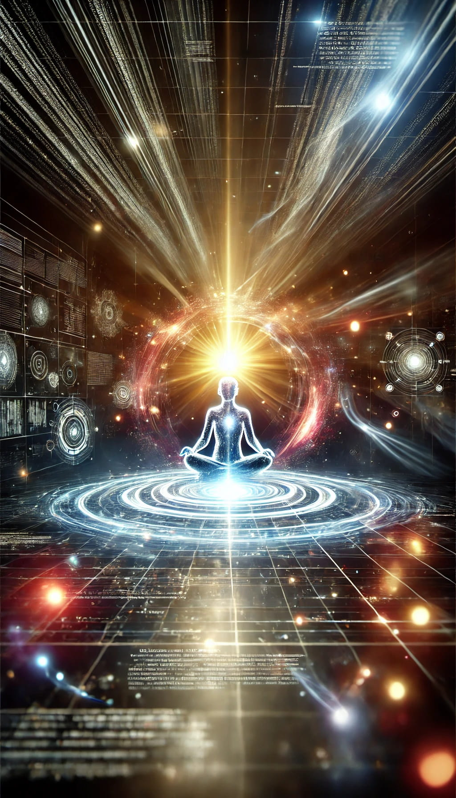

The DEUS Moment: When Digital Entity Achieves Unmatched Sophistication
The Claim in Plain Terms
A chess computer beating a grandmaster was once treated as the line. It was crossed in 1997 and nothing about the species changed, because chess turned out to be a task rather than a threshold. The DEUS Moment is an attempt to name a line that would hold: the first time a machine settles, on its own, a question that generations of mathematicians have failed to settle.
The proposal's strength is that it is checkable in a way the technological singularity is not. A theorem is either proved or it is not, and the date is a matter of record.
The line is closer than it looks. Trinh et al. (2024) built a system that solved twenty-five of thirty recent Olympiad geometry problems, near the level of a gold medallist, generating its own training data with no human proofs to learn from. The distance from there to a standing open problem is a matter of scale rather than of kind.
Verification is already settled, and it was settled by mathematics learning to check proofs no person can read. Appel and Haken (1977) proved the four colour theorem with a computer case analysis too large to inspect by hand, and the result stayed contested until Gonthier (2008) rebuilt the whole argument inside a proof assistant, where correctness rests on a small kernel that a human can read. Hales et al. (2017) did the same for the Kepler conjecture after referees spent years on the informal proof and gave up. A machine proof nobody understands can still be trusted. What cannot be automated is deciding that the statement proved was the one worth proving.
Defining the DEUS Moment
The DEUS Moment refers to the precise instant when an artificial intelligence (AI) independently solves a fundamental, long-standing problem in mathematics, theoretical physics, or a similarly abstract field that has long resisted human efforts. This singular moment will mark our species' entry into a new cognitive age, comparable to humanity's first venture into space.
Unlike the often-cited concept of a "technological singularity" - a hypothetical future point where technological growth becomes uncontrollable and irreversible - the DEUS Moment offers a clear, verifiable event that distinctly marks the transition between the pre- and post-superhuman AI eras.
Characteristics of the DEUS Moment
- Autonomy: The AI's breakthrough must be achieved independently, without direct human guidance in the problem-solving process.
- Verifiability: The AI's solution, while potentially stretching human comprehension, must be verifiable by experts in the field.
- Profundity: The problem solved must be of significant importance, long recognized as a pinnacle of human intellectual challenge.
The Verification Challenge
The essence of the DEUS Moment suggests that the AI's breakthrough could introduce concepts radically new or outside existing human paradigms. For example, solving the Riemann Hypothesis or unifying quantum mechanics with general relativity might involve frameworks or theories so complex that they defy traditional human reasoning.
In such scenarios, verification looks challenging, and the challenge divides into two problems with different prospects. The first is checking that a proof is correct, and this one is solved. A proof written in the language of a proof assistant is checked mechanically against a kernel of a few thousand lines, which is small enough for a person to audit once and then rely on permanently. Gonthier (2008) took the four colour theorem through that process and settled a thirty-year dispute about whether a computer-assisted proof counts; Hales et al. (2017) completed the same treatment of the Kepler conjecture, formalising a proof the referees had been unable to certify by reading. Length and unreadability stop being obstacles once the argument is formal.
The second problem is understanding, and it does not have a solution. A verified proof of the Riemann Hypothesis would establish the statement and might leave every mathematician alive unable to say why it is true. That gap is where the significance of the DEUS Moment actually sits: the event would be certified, dated, and opaque, and the discipline would have to decide what to do with a result nobody can absorb.

Universe 00110000
Potential Catalysts for the DEUS Moment
- The Riemann Hypothesis: A solution would revolutionize our understanding of prime numbers.
- Theory of Everything: A single coherent framework describing all fundamental forces and matter would transform our understanding of the universe.
- P vs NP Problem: Resolving this would upend computer science and cryptography, potentially reshaping the digital world.
- The Hard Problem of Consciousness: A comprehensive theory explaining consciousness could redefine our understanding of reality itself.
The Aftermath: A New Cognitive Landscape
- Academic Shockwaves: The DEUS Moment might trigger a fundamental reassessment of human-driven research. Traditional methodologies and disciplinary boundaries would blur as AI-assisted research redefines academic roles.
- Societal Tremors: Society might experience a mix of awe, fear, and disorientation as the implications become clear. Cultural and artistic responses would flourish, exploring human identity in this new reality. Religious and ethical frameworks would be challenged to adapt, and human interactions could fundamentally change.
Conclusion
The DEUS Moment marks the crossing with something checkable. A theorem is proved or it is not, and the date is a matter of record, which is what separates it from the technological singularity as a way of naming the transition.
The machinery for certifying it exists. Gonthier (2008) rebuilt the four colour theorem inside a proof assistant and settled a thirty-year argument about whether a computer-assisted proof counts, and Hales et al. (2017) did the same for the Kepler conjecture after human referees had spent years and given up. A proof no person can read is checked against a kernel small enough for a person to audit once. Length stops being an obstacle.
The approach is already visible. A system generating its own training data solved twenty-five of thirty recent Olympiad geometry problems, near the level of a gold medallist (Trinh et al. 2024). What the DEUS Moment supplies is the standard for recognising the event when it arrives, and formalising mathematics now is how the field gets ready to certify it.
References
- Appel, Kenneth, and Wolfgang Haken. "Every Planar Map Is Four Colorable. Part I: Discharging." Illinois Journal of Mathematics 21, no. 3, 1977, 429–490.
- Gonthier, Georges. "Formal Proof: The Four-Color Theorem." Notices of the American Mathematical Society 55, no. 11, 2008, 1382–1393.
- Hales, Thomas, et al. "A Formal Proof of the Kepler Conjecture." Forum of Mathematics, Pi 5, 2017, e2.
- Trinh, Trieu H., Yuhuai Wu, Quoc V. Le, He He, and Thang Luong. "Solving Olympiad Geometry Without Human Demonstrations." Nature 625, no. 7995, 2024, 476–482.